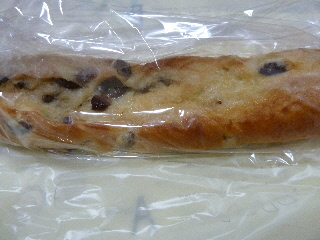
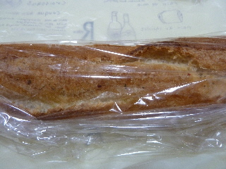
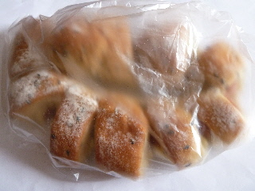
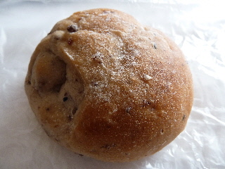
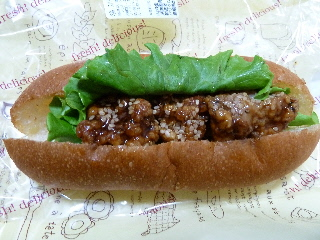
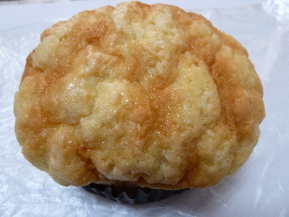
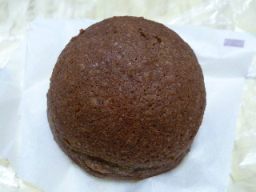

パリクロアッサンのお買い得な長いパン。
2013/06/23
大きくてお買い得なパンを買いました。
長いパンです。
お店に同じ商品が数個置いてあったんですが、長さがまちまちでした。
どうせなら大きい方がいいなって、取りやすい場所にあるもので、もっとも大きいサイズのパンを購入しました。

レーズンシュクレ（158円）です。

プレミアムガーリックフランス（150円）です。
両方美味しくてお勧めでな商品だと思いました。
また見つけたら買うかも。
島根県出雲市大塚町650-1
2013/06/23
大きくてお買い得なパンを買いました。
長いパンです。
お店に同じ商品が数個置いてあったんですが、長さがまちまちでした。
どうせなら大きい方がいいなって、取りやすい場所にあるもので、もっとも大きいサイズのパンを購入しました。

レーズンシュクレ（158円）です。

プレミアムガーリックフランス（150円）です。
両方美味しくてお勧めでな商品だと思いました。
また見つけたら買うかも。
2013/05/03
ウインナーとチーズが入った大きなパンを買ったら、くるっと丸めて袋に入れられました。

丸めてもいい格好にパンが出来てるみたいで、簡単に入りました。
食べるときに、パンが折れてる？なんて思いましたが、折れてもいいような形状になっているので、何も問題なかったです。
美味しいパンだったので、また買いたいです。

これは穀物入りのパンです。
ふっくらとしていて、軽い味でした。
2013/04/01
スパイシー竜田揚げって何味？って思いました。

醤油ダレがしっかりしみ込んだ竜田揚げに、多めのマスタードと少なめのマヨネーズ味でした。
ちょっと面白い味でした。
マスタードがスパイシーって事ですかね？
2012/11/22
ゆめタウン出雲で、カップ入りのメロンパンを見つけました。
ミルクメロンパン120円です。

カップ入りだけあって、下のパンはとってもふっくらでした。
上の生地は砂糖味がちゃんとあったので、ちゃんとメロンパン味になっていました。
2012/03/12
パン屋さんらしくない商品ですね。

ソフトかりんとうの中に餡が入ったおまんじゅうです。
甘い和菓子ですね。
ゆめタウン出雲のパン屋さん。